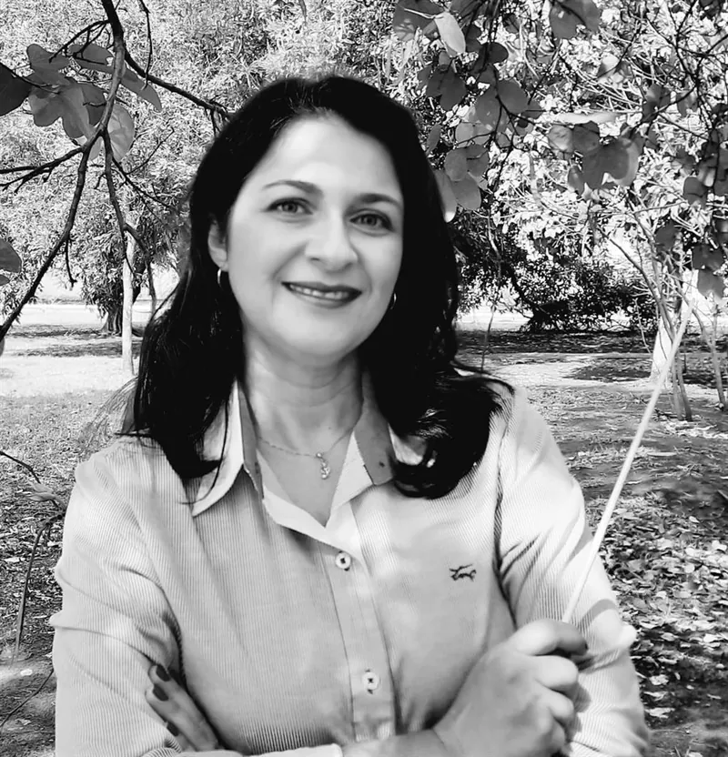
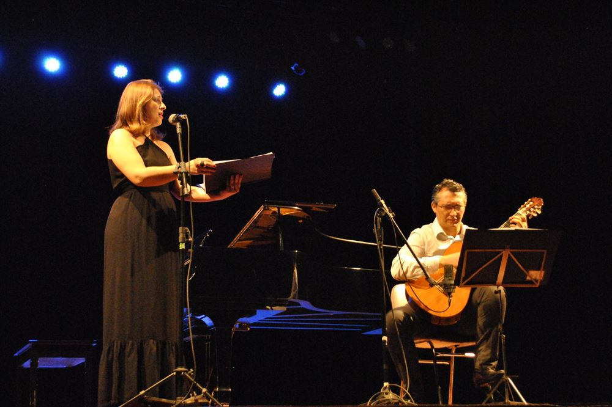

Ana Lúcia Gaborim
Soprano, regente e professora da Universidade Federal de Mato Grosso do Sul. Estuda canto há muitos anos com a soprano Adelia Issa.
É doutora em Música pela Universidade de São Paulo (2015), mestra em Música (2005) e bacharela em Composição e Regência (2000) pela Universidade Estadual Paulista. Desde 2006 dá aulas de Regência, Canto Coral, Fisiologia e Técnica Vocal na Licenciatura em Música da UFMS.
Coordena três projetos de extensão em canto coral: o CanteMus, laboratório da voz; o PCIU!, coral infantojuvenil da UFMS; e o Paraná Canta, que leva coros a escolas públicas com a Secretaria de Educação do Paraná e quatro universidades públicas. Presidiu a ABRACO, Associação Brasileira de Regentes de Coros, de 2021 a 2024.

Currículo
Ana Lúcia Iara Gaborim Moreira. A versão oficial e completa está na Plataforma Lattes.
Formação
-
2015 · Doutorado
Doutora em Música
Universidade de São Paulo (USP).
-
2005 · Mestrado
Mestra em Música
Universidade Estadual Paulista (UNESP).
-
2000 · Graduação
Bacharela em Composição e Regência
Universidade Estadual Paulista (UNESP).
-
Canto
Estudos particulares com a soprano Adelia Issa
Formação continuada em canto lírico.
Docência
-
Desde 2006
Professora efetiva, Licenciatura em Música, UFMS
Regência, Canto Coral, Fisiologia e Técnica Vocal. E-mail institucional: ana.gaborim@ufms.br
-
PROF-ARTES
Corpo docente do mestrado profissional em Artes
Programa em rede nacional.
-
UFBA
Corpo docente da Especialização em Regência
Universidade Federal da Bahia.
-
Convites
Regência em festivais e encontros de coros
Inclusive nos Painéis de Regência Coral da FUNARTE.
Projetos de extensão
-
UFMS
CanteMus, laboratório da voz
Estudo e prática da voz cantada.
-
UFMS
PCIU!, Projeto Coral Infantojuvenil da UFMS
Formação coral de crianças e adolescentes.
-
Paraná
Paraná Canta
Coros em escolas públicas, com a Secretaria de Educação do Paraná e quatro universidades públicas.
Entidades
-
2021 – 2024
Presidente da ABRACO
Associação Brasileira de Regentes de Coros.
-
ABEM
Representante estadual
Associação Brasileira de Educação Musical.
-
AFLAMS
Membro fundador
Academia Feminina de Letras e Artes de Mato Grosso do Sul.
Produção e títulos
-
Pesquisa
Artigos em periódicos, livros e congressos
Publicações nacionais e internacionais.
-
Suíça · França
Embaixadora da paz
Cercle Universel des Ambassadeurs de la Paix.
-
Israel
Embaixadora da paz
IFLAC World.
No Duo Amábile
Desde 2015, ao lado do violonista Marcelo Fernandes.
-
2015
Estreia no projeto SESC Partituras
Teatro do SESC, Corumbá (MS).
-
2023
Academia Brasileira de Letras e PEN Clube do Brasil
Rio de Janeiro. No mesmo ano, Memorial da América Latina, em São Paulo.
-
2024
Portugal e República Tcheca
Festivais de Outono da Universidade de Aveiro e Svatojánské Muzeum, em Nepomuk.
-
2025
Suíça, França e Itália
Berna, Paris, Todi e Deruta.